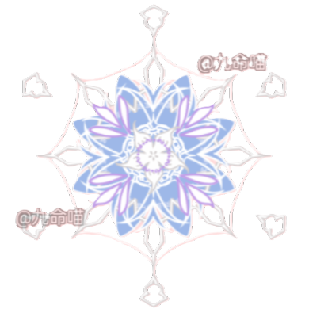

백화상단 소개 페이지
백화의 의미가 담겨진채 이어져 온 백화상단 관련 페이지입니다.
서천을 주요 거점으로 활동 중에 있습니다.

백화의 의미가 담겨진채 이어져 온 백화상단 관련 페이지입니다.
서천을 주요 거점으로 활동 중에 있습니다.

백화상단의 역사가 궁금하시다면?
아래의 버튼을 통해서 연표를 확인해주세요.
WORK
지금은 무엇을 하고 있나요?
스마트 팜
계절과 관계없는 생육 환경에 대한 자동 조절 시설
품종 개발 연구
개량된 종자 개발로 토지 생산성 향상 유도
라이브 커머스
쇼핑몰 사이트 내에서 진행되는 라이브 방송
구매 패턴 분석
고객들의 구매 빅데이터 분석을 통한 예측
DEPARTMENT
백화상단의 크게 어떻게 나눠지나요?
품종 개량, 스마트팜 시설 개발 등의 연구를 진행합니다.
상단 운영, 재무, 인사 등의 업무를 수행합니다.
상단의 물품에 대한 전반적인 관리를 수행합니다.
상단 내 팀들에 대한 감사를 진행합니다.
Presented by Chu Shi Hyeon